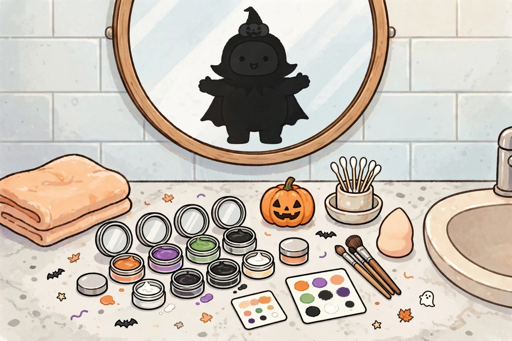

Halloween makeup safety for sensitive skin: patch testing, labels, and removal

Halloween makeup asks more of skin than everyday makeup does: heavier pigment, worn longer, often bought cheaply and used once, and — for children and for anyone with sensitive skin — applied to faces that may never have worn that product before. Halloween is Saturday, October 31, 2026. The eighteen days between October 13 and that night are not just shopping time. Used properly, they are testing time, and testing is what separates a costume from a rash that lasts into November.
Health disclaimer: this article is general information only, not medical advice, diagnosis, or treatment. It does not replace guidance from a physician, dermatologist, pharmacist, or eye care professional. Anyone with a history of severe reactions, eczema, asthma, or eye conditions should get professional advice before using costume makeup, adhesives, or decorative lenses, and should seek medical care promptly for a serious reaction.
Why Halloween makeup is a harder test for sensitive skin
A dermatologist at Saint Louis University puts the mechanism plainly: face paints are cosmetic products containing dyes, preservatives, pigments, solvents, fragrances, and antioxidants, and ingredients across that list can irritate skin or cause allergic contact dermatitis. The frequency of reactions is low, but who will react cannot be predicted in advance — which is precisely why a test exists. The American College of Allergy, Asthma & Immunology adds that some preservatives, including formaldehyde, can cause a rash, swelling of the skin, or breathing problems, and that artificial dyes and strong fragrances can set off eczema reactions and contact dermatitis in people with skin sensitivities.
Cost is part of the risk picture, not a snobbery point. Consumer Reports' Halloween guidance notes that cheap Halloween makeup may include preservatives that can cause a rash or swelling, and suggests higher-quality theatre makeup as the alternative — alongside testing it on a small area well before Halloween. The same guidance flags a trap outside the makeup bag entirely: nickel in cheap costume jewellery is a common cause of allergic contact dermatitis. Sensitive skin does not only meet the face paint on October 31; it meets the necklace, the earrings, the adhesive on the fake lashes, and the wig cap. The plan below treats the whole kit as the test subject, not just the brightest colour.
The patch-test timeline: one plan from conflicting advice
The sources disagree about timing, and the disagreement is useful once it is laid out. The U.S. Food and Drug Administration advises testing makeup 24 to 48 hours in advance, with a small amount on the arm of the person who will wear it. The Saint Louis University dermatologist describes a stricter home version: apply a small amount to the inner arm, cover it, remove it within 48 hours, and then watch the spot for a further 48 hours, because reactions can be delayed. Health Canada's cosmetics guidance gives the test locations — a small cleaned area behind the ear or on the inside of the forearm — and a rule shoppers miss: a product labelled hypoallergenic can still cause allergic reactions.
| Advice | Source | What it catches |
|---|---|---|
| Test 24–48 hours before wearing | FDA | Fast reactions — the minimum viable test |
| Cover the test spot up to 48 hours, then watch 48 more hours | Saint Louis University dermatologist | Delayed allergic contact reactions that a 24-hour test can miss |
| Test on the inner forearm or behind the ear, per the product directions | Health Canada | A reaction on skin closer in sensitivity to facial skin |
| Do not debut a whole new product lineup at the event; skin adjustment can take two weeks or more | Dermatology practice guidance | Breakouts and irritation from stacking several new products at once |
The decision framework for sensitive skin is to follow the longest advice, not the shortest. Work backwards from Saturday, October 31: buy the makeup by October 23, patch-test every new product — each colour separately, plus adhesives — on October 24 or 25, leave the test in place as the dermatologist's version describes, and read the result across October 26 to 28. A clear result leaves two spare days to swap a failed product for a tested alternative. A test run on October 30 that turns red on October 31 leaves no move at all. Rash, redness, swelling, itching, or any other irritation at the test spot means that product does not go on the face — the ACAAI advice is simply not to use it.
Reading the label in the store
- Read the directions before the colours. Health Canada's guidance is to check the container for safety information and hazard symbols and to follow directions carefully; misuse can lead to rashes, burns, or eye damage. A product whose directions exclude the eye area or broken skin is telling the shopper where it must not go.
- Check colours against the approved list. The FDA advises checking its list of color additives to see whether a colour is approved for its intended use, and not using colours that are not — especially for makeup around the eyes, where approval is use-specific.
- Treat “hypoallergenic” as marketing, not a clearance. Health Canada states directly that such a product can still cause allergic reactions; it means less likely, not never. The patch test still applies.
- Smell, colour, and texture are expiry tests. Do not use a cosmetic whose smell, colour, or feel has changed — a rule that condemns most of last year's opened Halloween kit. Unopened, in-date replacements are the sensitive-skin choice.
- Keep the packaging. Ingredient lists are how a reaction gets identified afterwards, and how the next purchase avoids the same ingredient. Photograph the list if the box will be recycled.
Products and traps that need a firmer no
Black henna. The Saint Louis University dermatologist warns that so-called black henna can contain a black dye, paraphenylenediamine (PPD), associated with red and itchy skin, blisters, and in some cases longer-term scarring or permanent changes in skin colour — and that henna tattoos should be completely avoided on the face. For sensitive skin, temporary tattoos of unknown composition belong in the same skip category unless the ingredients are known and tested like any other product.
Decorative contact lenses. The FDA's rule has no costume exception: do not wear decorative lenses that change how the eyes look unless an eye care professional has fitted them and given instructions for use. Consumer Reports' guidance adds why fit matters — a poor fit can cause corneal scratches, infection, and vision problems. Lenses sold as a novelty add-on at a costume counter, without a fitting, are the exact purchase both sources warn against. With eighteen days left, a fitting appointment is still possible; a same-day purchase on October 31 is not a fitting.
Glitter, adhesives, and jewellery. None of the sources gives craft glitter a pass as a cosmetic, and the label procedure above applies: if it is not sold as a cosmetic for skin or eye use, with directions, it does not go on sensitive facial skin. Adhesives for lashes and prosthetics get their own patch test, on the same October 24–25 schedule. Nickel-containing costume jewellery can be worn over clothing rather than against the skin, or skipped — a contact reaction does not care that the necklace was inexpensive and perfect for the costume.
Application day: hygiene rules that protect sensitive skin
- Wash hands before applying makeup, and start from a face washed with a mild, familiar cleanser — Health Canada's hygiene list starts with handwashing for a reason.
- Do not share makeup. Shared face paint moves between faces all night at parties; sensitive skin gets its own product, its own applicator.
- Use a clean applicator to take product out rather than fingers dipped repeatedly into a shared pot, and do not add water or saliva to dilute a product that has dried out — Health Canada prohibits both habits in its cosmetics guidance.
- Keep products dry and out of heat and sunlight while the kit travels; a hot car in the afternoon is storage abuse, not a neutral detail.
- Stop at the first sign. Burning, swelling, or a spreading rash during the night ends the experiment: remove the makeup, and seek medical care for breathing difficulty, significant swelling, or any severe reaction. Pride in a costume is not a treatment plan.
Removal: the half of the plan most guides skip
Removal deserves its paragraph because the failure mode is ordinary: a late night, a tired child, and makeup left on until morning. Dermatology guidance is blunt — do not go to bed with makeup on; sleeping in it risks clogged pores, breakouts, and infections. It also warns that makeup wipes alone will not do the job on layered, special-effects, or camouflage makeup. The procedure that matches the guidance is a pre-cleanse first — a cleansing balm or micellar water to dissolve the heavy layer — followed by an appropriate, familiar cleanse. Familiar matters: the same guidance warns against changing an entire product lineup right before an event, since skin can take two weeks or more to adjust. Removal products therefore come from the products already in the bathroom, tested by ordinary use, not from a brand-new Halloween-night purchase. For a child, removal happens before the car ride home if possible, and before sleep in all cases — the costume comes off, and so does everything on the skin under it.
FAQ
When is the last responsible day to patch-test for October 31? On the longest sourced advice — up to 48 hours covered plus 48 hours of watching — testing by October 26 or 27 is the outer edge, and October 24–25 is the comfortable plan. The FDA's 24-to-48-hour minimum catches fast reactions only.
One colour passed the test. Does that clear the whole palette? No. Different colours can use different pigments and dyes. Test each colour that will touch the face, plus adhesives, as separate spots.
Is theatre makeup automatically safe? No product is automatically safe for a specific person. Consumer Reports suggests higher-quality theatre makeup over cheap Halloween makeup, and the patch test still decides.
Can last year's kit be reused? Health Canada's rule answers it: if the smell, colour, or feel has changed, do not use it. Opened products carried over a year should be presumed changed until proven otherwise — and sensitive skin is the wrong place to run the experiment.